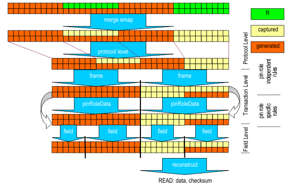

Decoding function
Decoding uses the responses received from the DUT to compute the fields within transactions and reconstruct the fields, parameter and symbols used with test methods. With other words the decode functions perform the opposite of encoding functions.
Note Decoding functions are always applied from protocol level to field level.

Protocol based testing on V93000 allows to specify decode functions on the same level as encode functions to ease complexity. The software automatically will take care of the correct order.
Functional changes
- Introduced in SmarTest 7.1.0